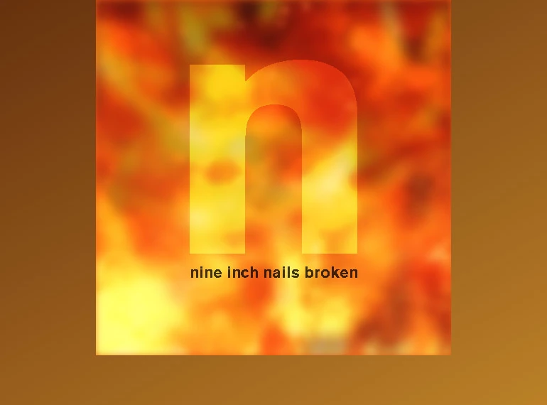

Pour cet exercice, vous devez écrire du CSS afin de recréer la pochette du mythique album industriel "Broken" de Nine Inch Nails.
Aperçu du résultat 👇
Couleurs 🎨
Médias
Position
static, relative, absolute, fixed, sticky
Margin
marge extérieur
Linear-gradient
Générer un dégradé.
Background
color, image, gradient
Pseudo-éléments
::before, ::after
Opacity
Gérer l'opacité d'un élément.
Overflow
visible, hidden, auto, scroll
@font-face
Importer des polices d'écritures
Filtres
blur, contrast, grayscale, sepia, etc.
Modes de fusion
multiply, screen, overlay, etc.
Hommage à Manu.